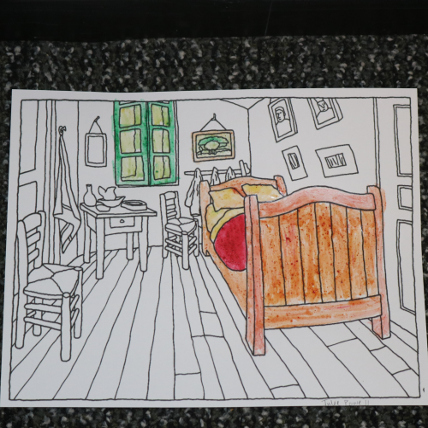
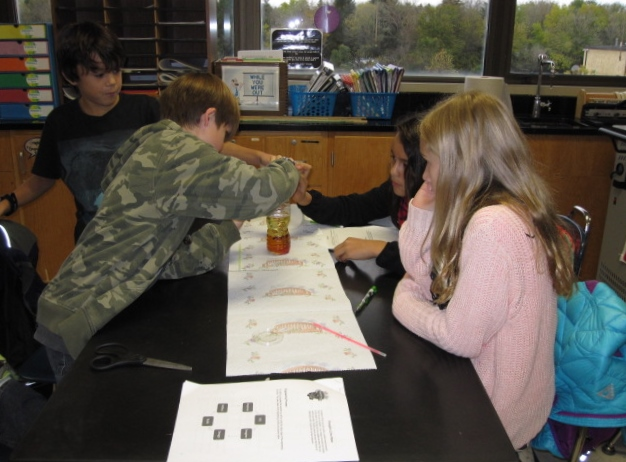

You can do STEM in all sorts of places. On this page we give you Chicagoland events to attend, things to do at home, and after- school clubs and organizations to check out.
 Paint Your Way to STEM Fun
If you enjoy painting, try making your own paints. You can do lots of experimenting with materials you’ll find at home. As always, check with mom or dad to be sure they’re okay with your exploration, and to confirm that you can use the required ingredients. Once they give the thumbs up, let’s get concocting.
So you think STEM is fun and exciting and you want to be more involved. Good for you! There are all sorts of groups where students are engaged in activities after school and sometimes on weekends. You'll have new and fun experiences and you'll have a chance to make new friends – kids who enjoy some of the same things you do! Here are a sampling organized by grade level. We'll be adding more throughout the year. If you have an idea to share send us a note at stem@dupageroe.org.
First of all, many schools have STEM clubs of some kind. Listen for announcements and look on bulletin boards in classrooms and in the hallway for notices of meetings. If you don't see any signs of a club, ask your science, math or technology teacher if you can start one. Here are some organizations that have clubs organized in schools, already. You might get some ideas for your group at these website:
Elementary and middle school teams design build and program robots using LEGO MINDSTORMS. In this program you will:
The Making Stuff Activity Guide
Material Science activities for kids and families. Video clips on the latest developments in the science of materials, too.
You will design cities with simulation software, build scale models, write essays and give oral presentations on your city’s design. Do you have a team at your school? Join up—or try to start one with the help of a teacher.
Hands-on invention challenges in an after-school club for middle school kids.
Are you interested in rocks, minerals, gems and fossils?
These clubs sponsor events and publications:
ESCONSI: The Earth Science Club of Northern Illinois - A family membership is $20.
The Chicago Rocks & Minerals Society - This group has a Geo-junior group.
Technology Student Association
TSA offers over 60 STEM competitions for middle and high school students across the nation. TSA membership includes over 190,000 students in 2,000 schools.
Compete with your team against other schools in knowledge and skill based competitions that you'll prepare for during the school year. If your school doesn't have a team, you can organize one.
Think you'd like to be a scientist?
Here's your chance to get involved in all sorts of actual investigations alone, with friends, or with your family.
You could also suggest a project to your teacher.
These Citizen Science resources are organized in alphabetical order:
If you find a cool project site, please share the link with us by emailing it to stem@dupageroe.org.
Displays, activities and family fun on annually, on the last Saturday in February, 10:30 a.m. - 3:30 p.m. at the Illinois Institute of Technology, 201 East Loop Drive, Wheaton. And it's Free!
A Calendar of STEM Events
Get to know Fermilab in Batavia, IL
Legos, holography, roller coasters and more!
NIU STEM Saturday courses, in Naperville & DeKalb.